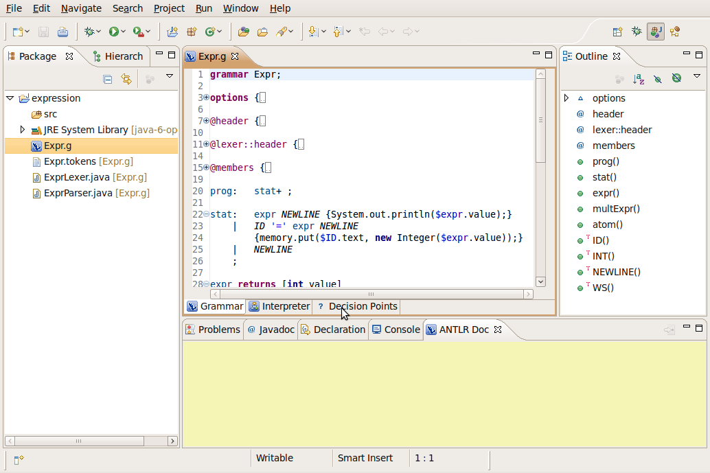

Decision Points(DFAs)
System Requirements and limitations
- Eclipse 3.4 (or higher)
- Zest: The Eclipse
Visualization Toolkit
- ANTLR IDE- Viz Plug-in
- Open your grammar
- Select the Decision Points page

- The Decision Points page shows all the
decision point associated at each rule
- Select the "dec2" decision at the "stat" rule
- You can change the graph disposition from the Layout
Menu

- Select the Tree Layout option to change the
graph disposition
- Select the Decision Link to see the decision
point in your grammar
- Select the Export Menu to export the graph.
You can export as an image (png) or as dot file